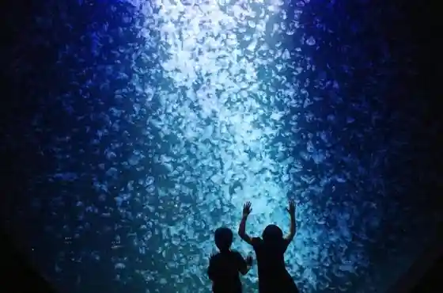
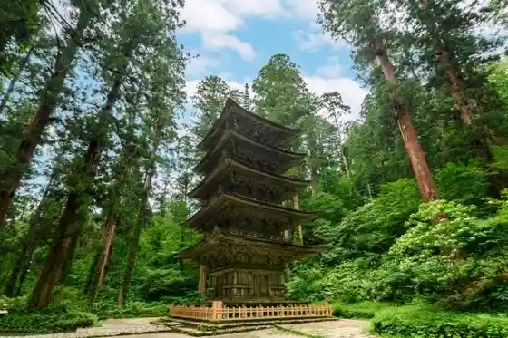
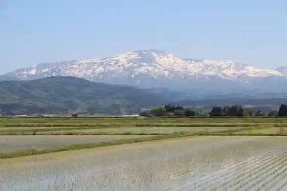
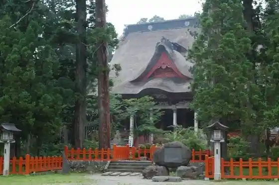

Haguro Yama
Tsuruoka, Yamagata · 0235-62-4727 · Official / source link
Sekaiichi no Kurage Aquarium ! Tohoku Epuson'akuariumu Kamosui
Tsuruoka, Yamagata · 0235-33-3036 · Official / source link

(Kokuho) Haguro Yama Goju to
Tsuruoka, Yamagata · 0235-62-2355 · Official / source link

Gassan
Tsuruoka, Yamagata · 0235-62-4321 · Official / source link

Dewa Miyama Shrine Haguro Sanza Kami Go Saiden
Tsuruoka, Yamagata · 0235-62-2355 · Official / source link

Yudono Yama Shrine
Tsuruoka, Yamagata · 0235-54-6133 · Official / source link
Atsumi Onsen
Tsuruoka, Yamagata · 0235-43-3547 · Official / source link
Yunohama Onsen
Tsuruoka, Yamagata · 0235-75-2258 · Official / source link
Zenpoji
Tsuruoka, Yamagata · 0235-33-3303 · Official / source link
Gassan Hachigome Midagahara
Tsuruoka, Yamagata · 0235-62-4727 · Official / source link
Dewa Miyama Shrine
Tsuruoka, Yamagata · 0235-62-2355 · Official / source link
Yudono Yama
Tsuruoka, Yamagata · 0235-53-3411 · Official / source link
Atsumi Onsen Asa City
Tsuruoka, Yamagata · 0235-43-3547 · Official / source link
Nanatsu Taki (Tsuruoka Tamugimata)
Tsuruoka, Yamagata · 0235-53-2120 · Official / source link
Yudono Yama So Honji Oami Dainichi Bo (Shingonshu Toyoyama Ha) / Shonai Sanju San Kannon Dai 9 Ban
Tsuruoka, Yamagata · 0235-54-6301 · Official / source link
Ni no Saka Chaya
Tsuruoka, Yamagata · 0235-62-4287 · Official / source link
Kyu Shibuya Ie House (Tamugimata Taso Minka)
Tsuruoka, Yamagata · 0235-22-1199 · Official / source link
Roadside Station Gassan Gassan Asahi Hakubutsu Village
Tsuruoka, Yamagata · 0235-53-3411 · Official / source link
Bandai Asahi National Park (Dewa Miyama Asahi Chiiki)
Tsuruoka, Yamagata · Official / source link
Rifuresshuopun !!
Tsuruoka, Yamagata · 0235-26-1638 · Official / source link
Roadside Station (Atsumi) Sharin Opun Kinengyoji (Yuhi no)
Tsuruoka, Yamagata · 0235-44-3211 · Official / source link
Taso Minka (Kyu Endo Ie House)
Tsuruoka, Yamagata · 0235-53-2113 · Official / source link
Haguro Sanrei Saiden
Tsuruoka, Yamagata · 0235-62-2355 · Official / source link
Roadside Station Atsumi
Tsuruoka, Yamagata · 0235-44-3211 · Official / source link
Matsugaoka Kaikon Ba
Tsuruoka, Yamagata · 0235-62-3985 · Official / source link
Dewa no Yuki Shuzo Museum
Tsuruoka, Yamagata · 0235-33-3262 · Official / source link
Haguro Yama Seizen In (Haguro Yama Shugen Honshu) / Shonai Sanju San Kannon Dai 1 Ban
Tsuruoka, Yamagata · 0235-62-2380 · Official / source link
Haraikawa
Tsuruoka, Yamagata · 0235-62-4727 · Official / source link
Atsumi Gaku
Tsuruoka, Yamagata · 0235-43-3547 · Official / source link
Oyama Park
Tsuruoka, Yamagata · 0235-33-3215 · Official / source link
Shonai Hanko Chido Kan
Tsuruoka, Yamagata · 0235-23-4672 · Official / source link
Takitaro Koen Oto Campground
Tsuruoka, Yamagata · 0235-55-2452 · Official / source link
Tsuruoka Shiruku
Tsuruoka, Yamagata · 0235-62-4295 · Official / source link
Pi no Korriina Farm Garden & Wainarii Matsugaoka
Tsuruoka, Yamagata · 0235-26-7807 · Official / source link
Bonji Kawa Gorge
Tsuruoka, Yamagata · 0235-53-2120 · Official / source link
Mawatari Kawa Yasuragi Park
Tsuruoka, Yamagata · 0235-57-2110 · Official / source link
Tsuruoka Katorikku Kyokai Tenshudo
Tsuruoka, Yamagata · 0235-22-0292 · Official / source link
Suga Falls
Tsuruoka, Yamagata · Official / source link
Kome no Kona Falls
Tsuruoka, Yamagata · 0235-53-2120 · Official / source link
Tamagawa Tera
Tsuruoka, Yamagata · 0235-62-2746 · Official / source link
So On Tera
Tsuruoka, Yamagata · 0235-22-3044 · Official / source link
Yokozuna Kashiwado Memorial Museum
Tsuruoka, Yamagata · 0235-57-2115 · Official / source link
Sanchoku Aguri
Tsuruoka, Yamagata · 0235-57-3300 · Official / source link
Shonai Obako no Sato Komagi
Tsuruoka, Yamagata · Official / source link
Mitake Seiryu Tera (Shingonshu Toyoyama Ha) / Shonai Sanju San Kannon Dai 33 Ban
Tsuruoka, Yamagata · 0235-24-2033 · Official / source link
Atsumi Onsen Bara Sono
Tsuruoka, Yamagata · 0235-43-3547 · Official / source link
Kasuga Shrine
Tsuruoka, Yamagata · 0235-57-5310 · Official / source link
Dai Toku Tera
Tsuruoka, Yamagata · 0235-22-8269 · Official / source link
Tsuru no Yu
Tsuruoka, Yamagata · 0235-62-4299 · Official / source link
Ashiyu (Mokke Yu)
Tsuruoka, Yamagata · 0235-43-3547 · Official / source link
Maruoka Castle Ruins Kato Kiyomasa Kobo Hi
Tsuruoka, Yamagata · 0235-57-2252 · Official / source link
Nezumigakan Itsukushima Shrine
Tsuruoka, Yamagata · 0235-43-4617 · Official / source link
Dewa Miyama History Museum
Tsuruoka, Yamagata · 0235-62-2356 · Official / source link
Matsugaoka Kaikon Memorial Museum
Tsuruoka, Yamagata · 0235-62-3985 · Official / source link
Ashiyu Kafe (Chittomosshie)
Tsuruoka, Yamagata · 0235-43-4390 · Official / source link
Kyunishi Tagawa Gun Yakusho
Tsuruoka, Yamagata · 0235-22-1199 · Official / source link
Kazama Ie Kyu Bettei (Muryo Hikari En Shaka Do)
Tsuruoka, Yamagata · 0235-22-0015 · Official / source link
Yamagataken Niigataken Sakai Shirube
Tsuruoka, Yamagata · 0235-43-4617 · Official / source link
Maya Yama
Tsuruoka, Yamagata · 0235-43-3547 · Official / source link
Kurokawa no no Sato O Gi Hall
Tsuruoka, Yamagata · 0235-57-5310 · Official / source link
Taiho Kan
Tsuruoka, Yamagata · 0235-24-3266 · Official / source link
Furutsuhausu Suzuki
Tsuruoka, Yamagata · 090-8787-9028 · Official / source link
Kushibiki Tara no Kidai Ski Area
Tsuruoka, Yamagata · Official / source link
Kamo Reimbo Beach
Tsuruoka, Yamagata · 0235-33-3023 · Official / source link
Otorii
Tsuruoka, Yamagata · 0235-62-4727 · Official / source link
Gassan Kogen Hamonii Park
Tsuruoka, Yamagata · Official / source link
Takitaro Kan
Tsuruoka, Yamagata · 0235-55-2452 · Official / source link
Haguro Yama Kaisan Do Hachi Ko Shrine
Tsuruoka, Yamagata · 0235-62-2355 · Official / source link
Amasawa Tera
Tsuruoka, Yamagata · 0235-57-2252 · Official / source link
Haguro Sannan Tani
Tsuruoka, Yamagata · 0235-62-4727 · Official / source link
Seizan Inari Shrine
Tsuruoka, Yamagata · Official / source link
Ko Dan no Sugi
Tsuruoka, Yamagata · 0235-54-6301 · Official / source link
Mitsuse Beach
Tsuruoka, Yamagata · 0235-73-3035 · Official / source link
Hachimori Yama Campground
Tsuruoka, Yamagata · 0235-73-2001 · Official / source link
Sutendogurasu Seisaku Experience
Tsuruoka, Yamagata · 0235-23-0393 · Official / source link
Tsuruoka Ritsu Fujisawa Shuhei Memorial Museum
Tsuruoka, Yamagata · 0235-29-1880 · Official / source link
Ochiai
Tsuruoka, Yamagata · 0235-53-3411 · Official / source link
Ju Go Yama Shogaku Tera
Tsuruoka, Yamagata · 0235-22-4150 · Official / source link
Shinzan Ryu Kaku Tera (Shingonshu Toyoyama Ha) / Shonai Sanju San Kannon Dai 28 Ban
Tsuruoka, Yamagata · 0235-24-2033 · Official / source link
ogawa en cafe
Tsuruoka, Yamagata · Official / source link
Shokoku Castle Ruins
Tsuruoka, Yamagata · 0235-47-2931 · Official / source link
Nenju no Matsu Garden
Tsuruoka, Yamagata · 0235-43-4617 · Official / source link
Yudono Yama Ski Area
Tsuruoka, Yamagata · 0235-54-6450 · Official / source link
Hachimori Yama Ski Area
Tsuruoka, Yamagata · 0235-73-2592 · Official / source link
Sososo CAMP Nezumigakan Campground
Tsuruoka, Yamagata · 080-9092-1000 · Official / source link
Asahi Renpo
Tsuruoka, Yamagata · 0235-53-3411 · Official / source link
Hachi Hisakazu Dam
Tsuruoka, Yamagata · 0235-53-2111 · Official / source link
Hayata no Ohatsukiicho
Tsuruoka, Yamagata · 0235-43-4617 · Official / source link
Tsuruoka Tenmangu Shrine
Tsuruoka, Yamagata · 0235-22-3952 · Official / source link
Oku no Hosomichi Uchikawa Josen no Chi Ato
Tsuruoka, Yamagata · 0235-25-2111 · Official / source link
Konami Watari Beach
Tsuruoka, Yamagata · 0235-73-2740 · Official / source link
Dainichi Yama Ioka Tera (Shingonshu Chizan Ha) / Shonai Sanju San Kannon Dai 27 Ban
Tsuruoka, Yamagata · 0235-22-7084 · Official / source link
Tachibanaya
Tsuruoka, Yamagata · 0235-43-2211 · Official / source link
Mitake
Tsuruoka, Yamagata · 0235-23-7863 · Official / source link
Yosano Akiko Kahi
Tsuruoka, Yamagata · 0235-43-3547 · Official / source link
Sakuran Boya no Suzuki Sakurambo Sono
Tsuruoka, Yamagata · 0235-57-4061 · Official / source link
Anno Ringo Sono
Tsuruoka, Yamagata · 090-1806-5720 · Official / source link
Gassan Asahi Sanchua Park
Tsuruoka, Yamagata · 0235-54-6606 · Official / source link
Taihakusan Kichijoji (Soto Shu) / Shonai Sanju San Kannon Dai 32 Ban
Tsuruoka, Yamagata · 0235-57-2712 · Official / source link
Ashiyu (Mosshie Yu)
Tsuruoka, Yamagata · 0235-43-4390 · Official / source link
Yamabushi Shugyo Taiken Juku
Tsuruoka, Yamagata · 0235-62-4727 · Official / source link
Piza Tsukuri Experience
Tsuruoka, Yamagata · 0235-23-0303 · Official / source link
Tsuruoka Nature Gakushu Koryu Kan (Hotoria)
Tsuruoka, Yamagata · 0235-33-8693 · Official / source link
Haguro Yama Kongo Ki In (Tendai Shu) / Shonai Sanju San Kannon Dai 2 Ban
Tsuruoka, Yamagata · 0235-62-2564 · Official / source link
Haguro Yama Campground
Tsuruoka, Yamagata · 0235-62-4270 · Official / source link
Atsumi Kawa Dam
Tsuruoka, Yamagata · 0235-66-5634 · Official / source link
Benten Shima
Tsuruoka, Yamagata · 0235-43-3547 · Official / source link
Basho no Kuhi
Tsuruoka, Yamagata · 0235-25-2111 · Official / source link
Hiuchi Saki Onsen Matsubayashi Kan
Tsuruoka, Yamagata · 0235-33-4350 · Official / source link
Choju Onsen
Tsuruoka, Yamagata · 0235-23-2614 · Official / source link
Naganuma Onsen Poppo Baths
Tsuruoka, Yamagata · 0235-64-4126 · Official / source link
Kokuzo Mikoto Nanko In
Tsuruoka, Yamagata · 0235-35-3157 · Official / source link
Taka Terayama Terumitsu Tera (Shingonshu Toyoyama Ha) / Shonai Sanju San Kannon Dai 30 Ban
Tsuruoka, Yamagata · 0235-62-3154 · Official / source link
Yu Mizu Tei Isagoya
Tsuruoka, Yamagata · 0235-75-2211 · Official / source link
Esumorubasutaminaru
Tsuruoka, Yamagata · Official / source link
Shimoda Sawa Katakuri Sono
Tsuruoka, Yamagata · 0235-53-2120 · Official / source link
Chotoku Tera
Tsuruoka, Yamagata · 0235-43-3656 · Official / source link
Basho Kuhi (Atsumi Yama Ya Fukiura Kakete Yu Suzumi)
Tsuruoka, Yamagata · 0235-43-3547 · Official / source link
Minamotoyoshitsune Joriku no Chi Hi
Tsuruoka, Yamagata · 0235-43-4617 · Official / source link
Basho Kuyo Hi
Tsuruoka, Yamagata · 0235-43-3547 · Official / source link
Sakuma Rihe Tourist Farm
Tsuruoka, Yamagata · 090-5182-5817 · Official / source link
Soba Uchi Experience / Furusato Mura Takara Tani
Tsuruoka, Yamagata · 0235-57-4415 · Official / source link
Ika Ichiya Hoshi Tsukuri Experience
Tsuruoka, Yamagata · 050-5848-7946 · Official / source link
Yamabushi Onsen Yupoka
Tsuruoka, Yamagata · 0235-62-4855 · Official / source link
Atsumi Onsen Tezukuri Taiken Workshop (Asotsu Tariya)
Tsuruoka, Yamagata · 0235-43-2411 · Official / source link
Ten Haku Yama
Tsuruoka, Yamagata · 0235-43-3547 · Official / source link
Roku Tokoro Jinja Keyaki
Tsuruoka, Yamagata · 0235-64-2111 · Official / source link
Sakai Shi Garden
Tsuruoka, Yamagata · 0235-22-1199 · Official / source link
Shiodawara Iwa
Tsuruoka, Yamagata · 0235-43-3547 · Official / source link
Sho Maki Hara Koen Su Ga Torinku
Tsuruoka, Yamagata · 0235-23-5694 · Official / source link
Buruberii Shukaku Experience / Suzuki Farm
Tsuruoka, Yamagata · 0235-62-4042 · Official / source link
Kurafuto Matsugaoka Koderaine Kurafuto Experience
Tsuruoka, Yamagata · 0235-62-2888 · Official / source link
Sugio Yama Jizo In (Shingonshu Chizan Ha) / Shonai Sanju San Kannon Dai 8 Ban
Tsuruoka, Yamagata · 0235-33-0750 · Official / source link
Mitsukuni Yama Kachi Den Tera (Soto Shu) / Shonai Sanju San Kannon Dai 23 Ban
Tsuruoka, Yamagata · 0235-29-2279 · Official / source link
Jun Ka Tokoro Fukuda Ya
Tsuruoka, Yamagata · 0235-33-2229 · Official / source link
Kame Ya
Tsuruoka, Yamagata · 0235-75-2301 · Official / source link
Yu no Sawa Gaku
Tsuruoka, Yamagata · 0235-53-2111 · Official / source link
Takadate Yama
Tsuruoka, Yamagata · 0235-25-2111 · Official / source link
Furusato Mura Takara Tani Fureai Plaza
Tsuruoka, Yamagata · 0235-57-4415 · Official / source link
Wara Saiku Experience / Naganuma Onsen Poppo Baths
Tsuruoka, Yamagata · 0235-64-4126 · Official / source link
Sanchoku Asahi Gu
Tsuruoka, Yamagata · 0235-58-1455 · Official / source link
Take no Tsuyu Shuzo
Tsuruoka, Yamagata · 0235-62-2209 · Official / source link
Kawa Gyo Yama Eifuku Tera
Tsuruoka, Yamagata · 0235-62-3522 · Official / source link
Hachimori Yama
Tsuruoka, Yamagata · 0235-25-2111 · Official / source link
Sato Shimizu
Tsuruoka, Yamagata · 0235-43-3547 · Official / source link
Arasawa Dam
Tsuruoka, Yamagata · 023-630-2619 · Official / source link
Shi Falls
Tsuruoka, Yamagata · 0235-43-4617 · Official / source link
Ezo Kan Park (Yaezakura)
Tsuruoka, Yamagata · 0235-62-4727 · Official / source link
Tateiwa
Tsuruoka, Yamagata · 0235-43-4617 · Official / source link
Haguro Yamadai Kane
Tsuruoka, Yamagata · 0235-62-2355 · Official / source link
Eiga (Oshin) Rogachi Nezumigasekigawa
Tsuruoka, Yamagata · 0235-43-4617 · Official / source link
Fukuo Tera Inari Shrine
Tsuruoka, Yamagata · Official / source link
Otaki (Tsuruoka)
Tsuruoka, Yamagata · Official / source link
Torin Yama Ei Washi Tera (Soto Shu) / Shonai Sanju San Kannon Dai 5 Ban
Tsuruoka, Yamagata · 0235-26-8877 · Official / source link
Ito Gaku
Tsuruoka, Yamagata · 0235-53-2120 · Official / source link
Yu Mame Sa Bai Shrine
Tsuruoka, Yamagata · 0235-35-4111 · Official / source link
Nagayama Yashikiato
Tsuruoka, Yamagata · 0235-35-1301 · Official / source link
E Rosoku Etsuke Ke Experience
Tsuruoka, Yamagata · 0235-22-1070 · Official / source link
Otori Shrine
Tsuruoka, Yamagata · Official / source link
Terao Yama Ho Hikari In (Shingonshu Chizan Ha) / Shonai Sanju San Kannon Dai 7 Ban
Tsuruoka, Yamagata · 0235-57-3866 · Official / source link
Akashi Yama Ryugu Tera (Tanritsu Tendai Shu) / Shonai Sanju San Kannon Dai 25 Ban
Tsuruoka, Yamagata · 0235-33-3879 · Official / source link
Yudono Yama Yuryodoro
Tsuruoka, Yamagata · Official / source link
Niizeki Inaba Shu Bohi
Tsuruoka, Yamagata · 0235-64-2111 · Official / source link
Kinsei Nenju Kan Shi
Tsuruoka, Yamagata · 0235-43-3547 · Official / source link
Kushibiki Onsen Yu Town
Tsuruoka, Yamagata · 0235-57-4313 · Official / source link
Yura Campground
Tsuruoka, Yamagata · 0235-73-2250 · Official / source link
Dainichi Yama Chofuku Tera (Shingonshu Toyoyama Ha) / Shonai Sanju San Kannon Dai 26 Ban
Tsuruoka, Yamagata · 0235-35-2226 · Official / source link
Haguro Yama Yuryodoro
Tsuruoka, Yamagata · Official / source link
Kinpo Shrine
Tsuruoka, Yamagata · 0235-23-7863 · Official / source link
Fujisawa Shuhei Sensei Kinenhi
Tsuruoka, Yamagata · 0235-25-2111 · Official / source link
Soba Uchi Experience / Soba Tokoro Dai Bonji
Tsuruoka, Yamagata · 0235-53-3413 · Official / source link
Soba Uchi Experience / Naganuma Onsen Poppo Baths
Tsuruoka, Yamagata · 0235-64-4126 · Official / source link
Onsen Shrine
Tsuruoka, Yamagata · 0235-43-3547 · Official / source link
Ryogon In
Tsuruoka, Yamagata · 0235-35-3304 · Official / source link
Zen'in Gakuji Chon Do
Tsuruoka, Yamagata · 0235-22-1199 · Official / source link
Taka Terayama Raiden Shrine
Tsuruoka, Yamagata · 0235-62-2111 · Official / source link
Mitsuse Campground
Tsuruoka, Yamagata · 0235-73-3035 · Official / source link
Konami Watari Campground
Tsuruoka, Yamagata · 0235-73-2740 · Official / source link
Ji Kumo In
Tsuruoka, Yamagata · 0235-53-3241 · Official / source link
Yu Kengataki
Tsuruoka, Yamagata · 0235-43-4617 · Official / source link
Yuda Kawa Onsen Umebayashi Park (Ume Festival)
Tsuruoka, Yamagata · 0235-35-4111 · Official / source link
Higashitagawa Bunka Memorial Museum
Tsuruoka, Yamagata · 0235-64-2537 · Official / source link
Mori Atsushi no Bungaku Kinenhi / Shime Tera
Tsuruoka, Yamagata · 0235-54-6536 · Official / source link
Tsuchinoetatsu no Yaku Gekisen Chi Kinenhi
Tsuruoka, Yamagata · 0235-43-4617 · Official / source link
Tofu Tsukuri Experience
Tsuruoka, Yamagata · 0235-64-2212 · Official / source link
Haguro Yama Ski Area
Tsuruoka, Yamagata · 0235-62-4270 · Official / source link
Kano Miya
Tsuruoka, Yamagata · 0235-62-4727 · Official / source link
Akagawa Dote
Tsuruoka, Yamagata · 0235-25-2111 · Official / source link
Jugo Satogahara Kosenjo
Tsuruoka, Yamagata · 0235-33-3214 · Official / source link
So Gen Tera no Hisakaki
Tsuruoka, Yamagata · 0235-44-2545 · Official / source link
Minamotoyoshitsune Yukari no Hama Kinenhi
Tsuruoka, Yamagata · 0235-43-3547 · Official / source link
Tsukemo no Tokoro Hon Cho
Tsuruoka, Yamagata · 0235-33-2023 · Official / source link
Akasaka Kusurishi Shrine
Tsuruoka, Yamagata · Official / source link
Oshimizu Park
Tsuruoka, Yamagata · 0235-43-3547 · Official / source link
Fujishima Joshi
Tsuruoka, Yamagata · 0235-64-2111 · Official / source link
Fukuchi Yama Cho Gen Tera (Soto Shu) / Shonai Sanju San Kannon Dai 4 Ban
Tsuruoka, Yamagata · 0235-62-2004 · Official / source link
Kumano Nagamine
Tsuruoka, Yamagata · 0235-25-2111 · Official / source link
Togei Experience / Matsugaoka
Tsuruoka, Yamagata · 0235-62-4824 · Official / source link
Buruberiijamu Tsukuri Experience
Tsuruoka, Yamagata · 0235-62-4042 · Official / source link
Mine Kusurishi Shrine
Tsuruoka, Yamagata · Official / source link
Kenmin no Umi Puru Suparu
Tsuruoka, Yamagata · 0235-68-5121 · Official / source link
Fujiwara Kiyoto no Hi
Tsuruoka, Yamagata · 0235-43-3547 · Official / source link
Umezu Chujo Bohi
Tsuruoka, Yamagata · 0235-64-2111 · Official / source link
Ta Tane In
Tsuruoka, Yamagata · 0235-22-8262 · Official / source link
Yu no Sawa Onsen
Tsuruoka, Yamagata · 0235-64-4170 · Official / source link
Ni no Taki (Tsuruoka)
Tsuruoka, Yamagata · Official / source link
Hakusan Shima
Tsuruoka, Yamagata · 0235-73-2250 · Official / source link
Tsuruoka Park
Tsuruoka, Yamagata · 0235-25-2111 · Official / source link
Honmyo Tera
Tsuruoka, Yamagata · 0235-53-2269 · Official / source link
Chido Museum
Tsuruoka, Yamagata · 0235-22-1199 · Official / source link
Shugyo Yama Nangaku Tera (Shingonshu Chizan Ha) / Shonai Sanju San Kannon Dai 29 Ban
Tsuruoka, Yamagata · 0235-23-5054 · Official / source link
Gassan Bijita Center
Tsuruoka, Yamagata · 0235-62-4321 · Official / source link
Kannagara Mon
Tsuruoka, Yamagata · Official / source link
Asahi Supa Line (Kendo Tsuruoka Murakami Sen)
Tsuruoka, Yamagata · Official / source link
Atsumi Onsen Ashiyu (Ambe Yu / Mokke Yu / Mosshie Yu)
Tsuruoka, Yamagata · 0235-43-4617 · Official / source link
Jijisugi
Tsuruoka, Yamagata · 0235-62-2355 · Official / source link
Gassan Naka no Miya Onda Hara Sanro Tokoro
Tsuruoka, Yamagata · 090-2367-9037 · Official / source link
Oyama Ue Ike Shita Ike
Tsuruoka, Yamagata · 0235-33-3215 · Official / source link
JA Shonai Tagawa Gassan Wain Yama Budo Kenkyusho
Tsuruoka, Yamagata · 0235-53-2789 · Official / source link
Otori Ike
Tsuruoka, Yamagata · 0235-53-2120 · Official / source link
Kumano Shrine (Tsuruoka)
Tsuruoka, Yamagata · 0235(43)3547 · Official / source link
Shonai Shrine
Tsuruoka, Yamagata · 0235-22-8100 · Official / source link
Yudono Yama Shime Tera (Shingonshu Chizan Ha) / Shonai Sanju San Kannon Dai 31 Ban
Tsuruoka, Yamagata · 0235-54-6536 · Official / source link
Shonai Kanko Bussan Kan Furusato Honpo 4 Gatsu 4 Nichi Rinyuaruopun !
Tsuruoka, Yamagata · 0120-79-5111 · Official / source link
Haguro Yama Sai Kan
Tsuruoka, Yamagata · 0235-62-2357 · Official / source link
Atsumi Onsen Bankoku Ya
Tsuruoka, Yamagata · 0570-00-8598 · Official / source link
Sutajiosedikku Shonai Opunsetto
Tsuruoka, Yamagata · 0235-62-4299 · Official / source link
Yuda Kawa Onsen
Tsuruoka, Yamagata · 0235-35-4111 · Official / source link
Nezumigakan
Tsuruoka, Yamagata · 0235-44-2112 · Official / source link
Ideha Bunka Memorial Museum
Tsuruoka, Yamagata · 0235-62-4727 · Official / source link
Yama Isogawa no Tama Sugi
Tsuruoka, Yamagata · 0235-45-2949 · Official / source link
Gassan Dam
Tsuruoka, Yamagata · 0235-54-6711 · Official / source link
Yunohama Beach
Tsuruoka, Yamagata · 0235-75-2258 · Official / source link
Haguro Yama Suginami Ki
Tsuruoka, Yamagata · 0235-62-4727 · Official / source link
Kyu Kazama Ie House (Hinoesaru Do)
Tsuruoka, Yamagata · 0235-22-0015 · Official / source link
Yura Onsen
Tsuruoka, Yamagata · 0235-73-2250 · Official / source link
Haguro Yama Arasawa Tera (Haguro Yama Shugen Honshu) / Shonai Sanju San Kannon Kubi Ban
Tsuruoka, Yamagata · 0235-62-2380 · Official / source link
Hachiman Shrine (Tsuruoka)
Tsuruoka, Yamagata · 0235-64-2111 · Official / source link
Sai Kan Shojinryori
Tsuruoka, Yamagata · 0235-62-2357 · Official / source link
Atsumi Onsen Atsumi Kawa Kahan
Tsuruoka, Yamagata · 0235-43-3547 · Official / source link
Kanke Garden
Tsuruoka, Yamagata · 0235-25-0925 · Official / source link
Marin Park Nezugaseki Beach
Tsuruoka, Yamagata · 0235-44-2112 · Official / source link
Shina Shoku Experience
Tsuruoka, Yamagata · 0235-47-2502 · Official / source link
Goten Mari Seisaku Experience
Tsuruoka, Yamagata · 0235-22-8140 · Official / source link